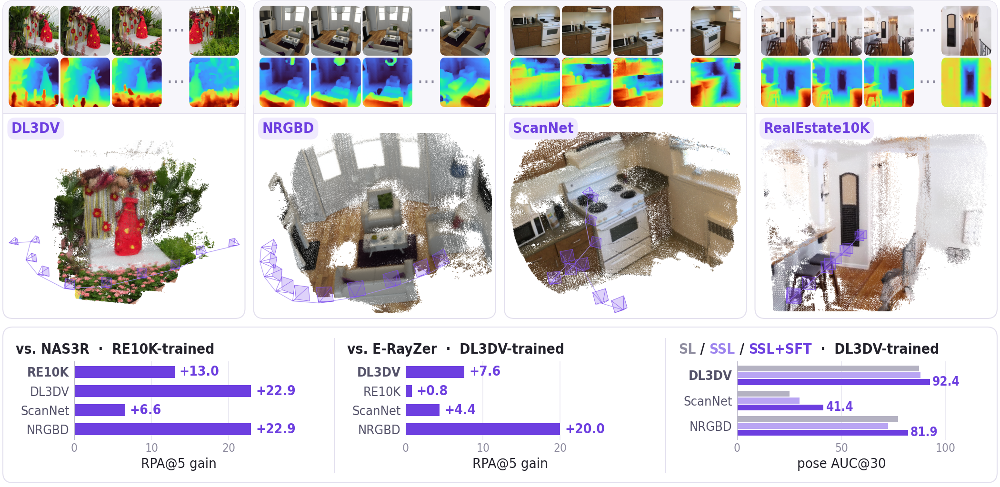
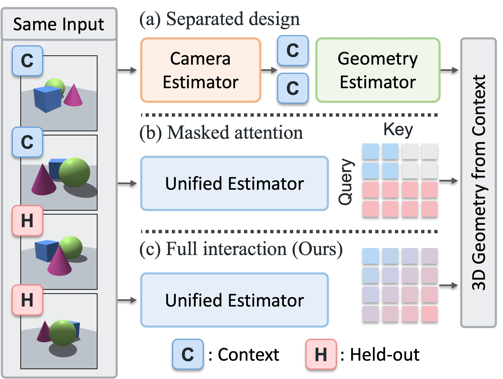
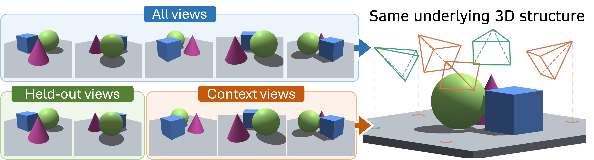
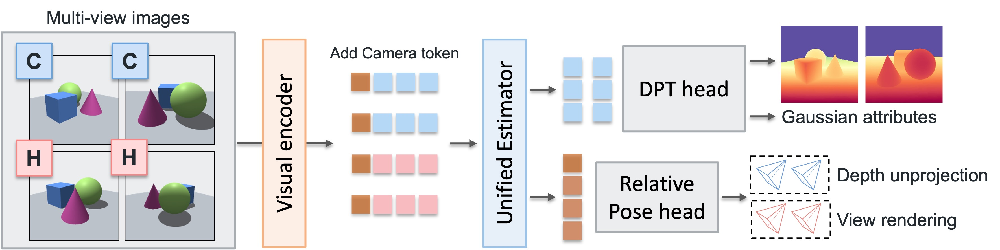
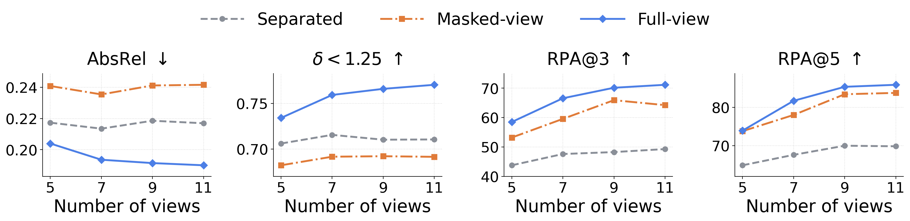
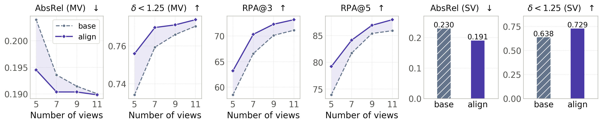
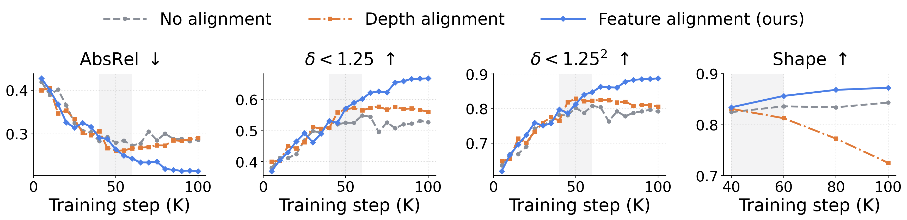
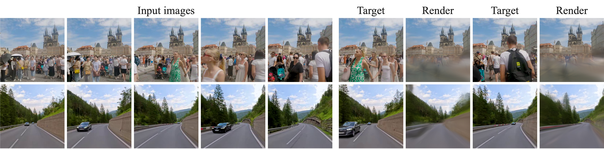

Rethinking Asymmetry in
Self-Supervised 3D Geometry Learning
1Yonsei University 2UC Merced 3ETH Zurich
TL;DR Rather than masking images from the network, we mask them only from the 3D representation, so every image interacts with all others in one unified network to estimate geometry. Trained without any 3D labels, this improves camera pose and depth over prior self-supervised methods.

Reconstructions
One forward pass over 10 unposed images (DL3DV-trained model). Points are the model's predicted depth, lifted with its predicted cameras (purple). No ground truth is used, and points inconsistent across views are removed.
Method
Where should the asymmetry live?
A self-supervised objective needs an asymmetry between what the model sees and what it must explain; otherwise trivial solutions satisfy it. Prior pose-free methods place this asymmetry in the input space. E-RayZer splits camera and geometry prediction into two backbones so that geometry sees only context views, and NAS3R masks attention so that context views attend only among themselves.
When a held-out view lies between context views, the context views already describe the same scene. Hiding the held-out view from the network hides no geometry; it only removes correspondence. We instead place the asymmetry in the 3D representation: a shared backbone lets every view inform depth and pose, while the rendered scene is built from context-view Gaussians only, so a held-out view is never rendered from its own prediction.



Left: all designs build the 3D scene from context (C) views. Separate backbones (a) and masked attention (b) restrict interaction with held-out (H) views, while ours (c) allows full cross-view attention and excludes held-out views only from the 3D representation. Top right: when held-out views lie between context views (the interpolation setting), the context views depict the same scene as the full view set. Bottom right: one estimator processes context and held-out views; a DPT head predicts depth and Gaussian attributes, a pose head predicts cameras, and context-view depths are unprojected and rendered at the held-out poses.
Beyond rendering: two alignment signals
Asymmetric feature alignment. A model sees a scene more completely from many views than from a few. We turn this gap into a training signal. An EMA teacher encodes all views, the student encodes a sparse subset, and the student's features are pulled toward the teacher's with a cosine loss. Matching features rather than depth maps keeps the teacher's depth and scale errors from being copied.
Semantic guidance. The rendering loss is local and pixel-wise. We additionally align the encoder features with those of a frozen vision foundation model, which supplies structure where photometric cues are weak, such as textureless or repetitive regions.
None of the three signals uses geometric annotation.
Results
All comparisons use 10 input views, released baseline checkpoints and the baselines' evaluation protocols. Pose is scored by relative pose accuracy (RPA, %) at 3° and 5°, and depth by AbsRel and δ<1.25 after per-view median alignment. Shaded cells mark the best per column.
Trained on RealEstate10K
| Method | 3D prior | Params | RE10K (trained) | DL3DV | ScanNet v2 | NRGBD | ||||||||
|---|---|---|---|---|---|---|---|---|---|---|---|---|---|---|
| RPA@3↑ | @5↑ | RPA@3↑ | @5↑ | RPA@3↑ | @5↑ | AbsRel↓ | δ<1.25↑ | RPA@3↑ | @5↑ | AbsRel↓ | δ<1.25↑ | |||
| SPFSplat | MASt3R | 629M | 64.2 | 78.1 | 10.5 | 19.3 | 2.0 | 5.7 | 0.223 | 0.757 | 3.2 | 14.1 | 0.156 | 0.803 |
| NAS3R | – | 1.22B | 47.4 | 67.2 | 1.5 | 3.5 | 0.1 | 0.5 | 0.381 | 0.604 | 3.7 | 7.2 | 0.214 | 0.630 |
| Ours | – | 183M | 65.7 | 80.2 | 14.2 | 26.4 | 2.7 | 7.1 | 0.226 | 0.785 | 16.5 | 30.1 | 0.106 | 0.878 |
Camera pose and multi-view depth with 10 input views, all models trained on RE10K. SPFSplat initializes its backbone from MASt3R, which is trained with 3D supervision, and takes ground-truth intrinsics as input.
Trained on DL3DV
| Method | Params | DL3DV (trained) | RE10K | ScanNet v2 | NRGBD | ||||||||
|---|---|---|---|---|---|---|---|---|---|---|---|---|---|
| RPA@3↑ | @5↑ | RPA@3↑ | @5↑ | RPA@3↑ | @5↑ | AbsRel↓ | δ<1.25↑ | RPA@3↑ | @5↑ | AbsRel↓ | δ<1.25↑ | ||
| E-RayZer | 246M | 60.3 | 72.1 | 54.6 | 74.5 | 4.9 | 12.3 | 0.168 | 0.819 | 35.6 | 61.5 | 0.095 | 0.908 |
| Ours | 183M | 70.0 | 79.7 | 57.7 | 75.3 | 6.6 | 16.7 | 0.125 | 0.872 | 63.5 | 81.5 | 0.082 | 0.917 |
Camera pose and multi-view depth with 10 input views, both models trained on DL3DV. E-RayZer decodes depth only for its context views, so for this comparison our depth head also decodes only the context views and both methods are scored on the same views.
Recovered camera trajectories (interactive)
Predicted cameras from 10 unposed views (color) against ground truth (white), after one Sim(3) alignment of the camera centers (Umeyama). APE is the RMSE of the aligned camera centers.
Loading the 3D viewer…
Cameras appear in temporal order, then the view orbits. Drag to rotate, scroll to zoom, right-drag or shift-drag to pan, double-click or “Reset view” to replay.
Analyses
Controlled experiments on DL3DV: all variants share the backbone, data and compute, and are evaluated on a fixed 48-frame span. Depth is compared against MoGe-2 pseudo ground truth, so these numbers are not directly comparable to the main tables.
Full interaction vs. input-space asymmetry

Asymmetric feature alignment

| Method | Camera pose | Multi-view depth | Single-view depth | |||||
|---|---|---|---|---|---|---|---|---|
| RPA@3↑ | RPA@5↑ | AbsRel↓ | δ<1.25↑ | δ<1.25²↑ | AbsRel↓ | δ<1.25↑ | δ<1.25²↑ | |
| No alignment | 66.6 | 81.7 | 0.195 | 0.758 | 0.901 | 0.230 | 0.638 | 0.850 |
| Depth alignment | 63.4 | 81.7 | 0.244 | 0.692 | 0.854 | 0.248 | 0.651 | 0.844 |
| Feature alignment (ours) | 69.8 | 84.6 | 0.191 | 0.768 | 0.905 | 0.191 | 0.729 | 0.901 |
Context alignment analysis on DL3DV. Aligning depth maps directly does not help in this setting, while aligning features does.

Self-supervised pretraining for supervised fine-tuning
| Method | DL3DV (trained) | ScanNet v2 | NRGBD | |||||||||
|---|---|---|---|---|---|---|---|---|---|---|---|---|
| RPA@3↑ | @5↑ | @10↑ | AUC@30↑ | RPA@3↑ | @5↑ | @10↑ | AUC@30↑ | RPA@3↑ | @5↑ | @10↑ | AUC@30↑ | |
| SSL (100K iters) | 66.6 | 81.7 | 91.7 | 88.0 | 1.2 | 5.2 | 17.6 | 29.8 | 16.5 | 37.8 | 74.3 | 72.3 |
| SL (200K iters) | 50.8 | 74.6 | 92.5 | 87.2 | 0.7 | 3.2 | 13.5 | 25.2 | 16.3 | 41.2 | 82.7 | 77.2 |
| SSL+SFT (100K + 50K iters) | 73.4 | 89.3 | 97.2 | 92.4 | 3.4 | 10.1 | 28.4 | 41.4 | 33.3 | 62.0 | 87.9 | 81.9 |
Same architecture and data throughout, analysis protocol. SSL alone, trained for half the iterations, is comparable to SL: it is more accurate at strict pose thresholds, while SL is better on some looser metrics. Fine-tuning the SSL model with the same supervision as SL surpasses both on every reported metric with fewer total iterations than SL.
Dynamic monocular videos
We also explore training on dynamic monocular videos from SpatialVID, keeping the architecture and objective unchanged, so the model still assumes a static scene. We compare a model trained on DL3DV alone with the same model trained on DL3DV and SpatialVID, evaluating camera pose on held-out SpatialVID videos grouped by the dataset's metadata (10 views over a 32-frame span).
| Training data | DL3DV | SpatialVID | ||
|---|---|---|---|---|
| benchmark | dyn_low | dyn_high | crowded | |
| DL3DV | 80.7 / 87.1 | 36.9 / 70.0 | 25.4 / 55.7 | 24.1 / 55.1 |
| DL3DV + SpatialVID | 79.1 / 85.8 | 74.7 / 86.0 | 73.9 / 84.0 | 87.4 / 89.2 |
RPA@5 / AUC@30 (%) with 10 input views. SpatialVID test sets have low or high ratios of dynamic content, or crowds, and use a 32-frame span. DL3DV uses a 48-frame span.
Without any architectural change, the model tends to assign low opacity to Gaussians on moving objects, so they are largely absent from renderings at held-out views while the static background is reconstructed.

Camera trajectories on dynamic videos (interactive)
Predicted cameras (color) against ground truth (white) on held-out SpatialVID videos, after one Sim(3) alignment of the camera centers.
Loading the 3D viewer…
Drag to rotate, scroll to zoom, right-drag or shift-drag to pan, double-click or “Reset view” to replay.
BibTeX
@article{kang2026rethinking,
title = {Rethinking Asymmetry in Self-Supervised 3D Geometry Learning},
author = {Kang, Gyeongjin and Cheng, Freeman and Ye, Botao and Lyu, Weijie and
Yang, Ming-Hsuan and Park, Eunbyung},
journal = {arXiv preprint},
year = {2026}
}